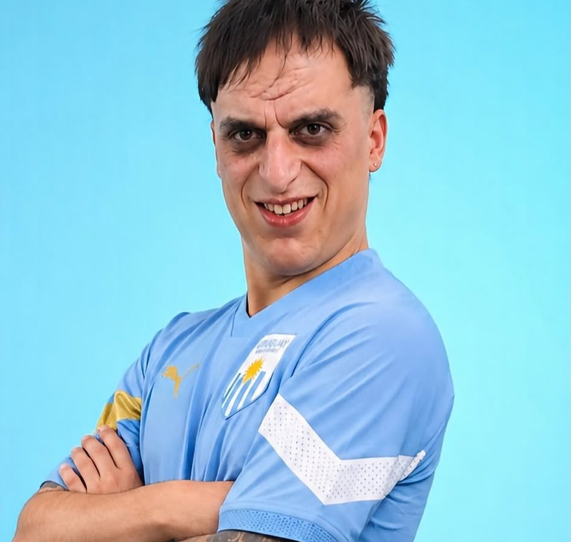
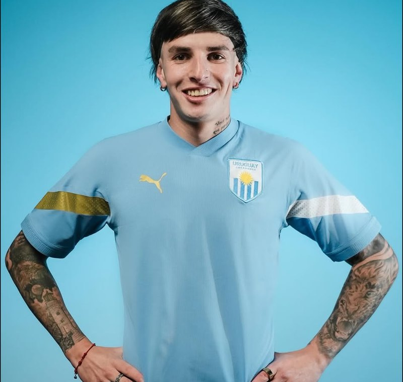
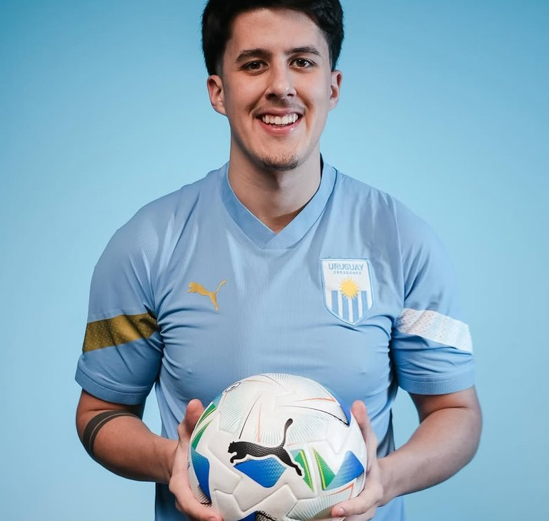
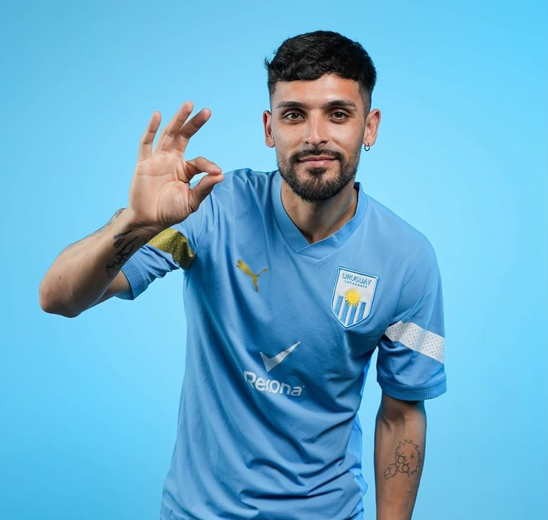
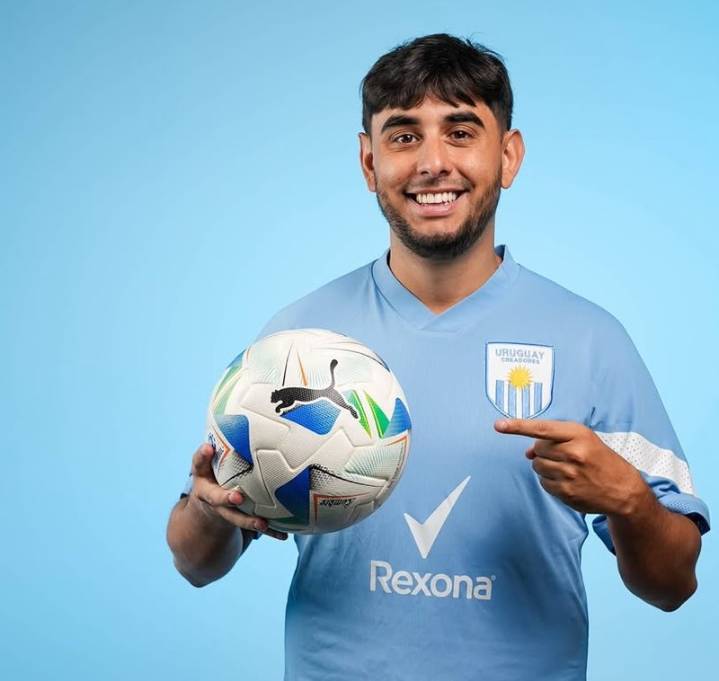

La plantilla
Los jugadores que visten la celeste.

Una muestra con cinco jugadores. En el sitio final, cada uno tendría su ficha con posición, número y sus mejores momentos.
-

@elrufian_123 Ver en Instagram -

@AlexisDrewed Ver en Instagram -

@santicap Ver en Instagram -

@brianart_11 Ver en Instagram -

@Javomachado Ver en Instagram